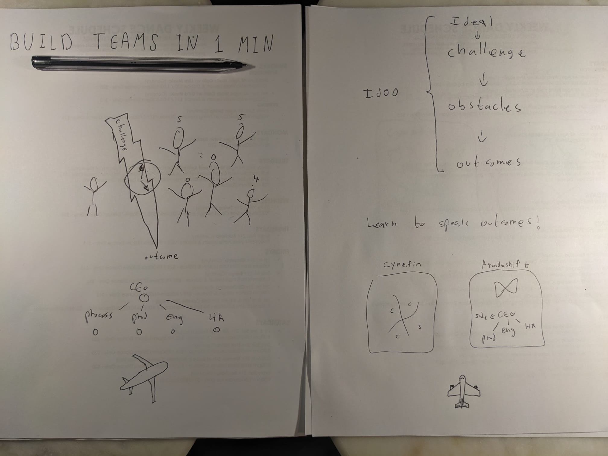
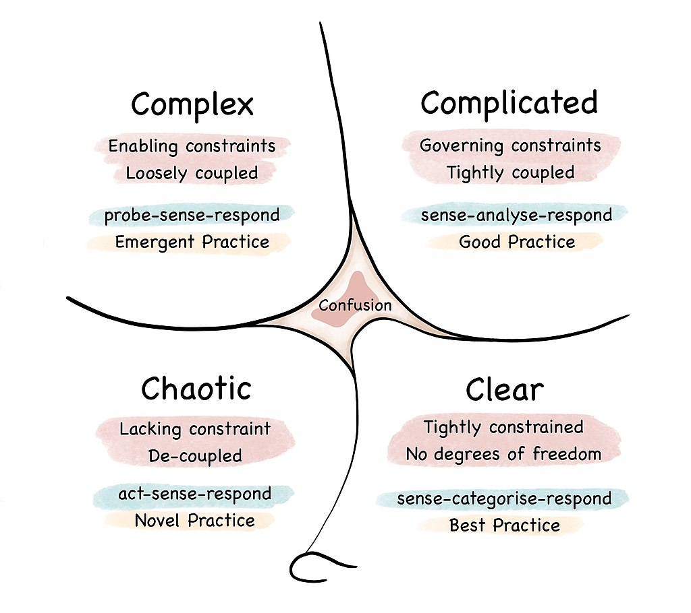
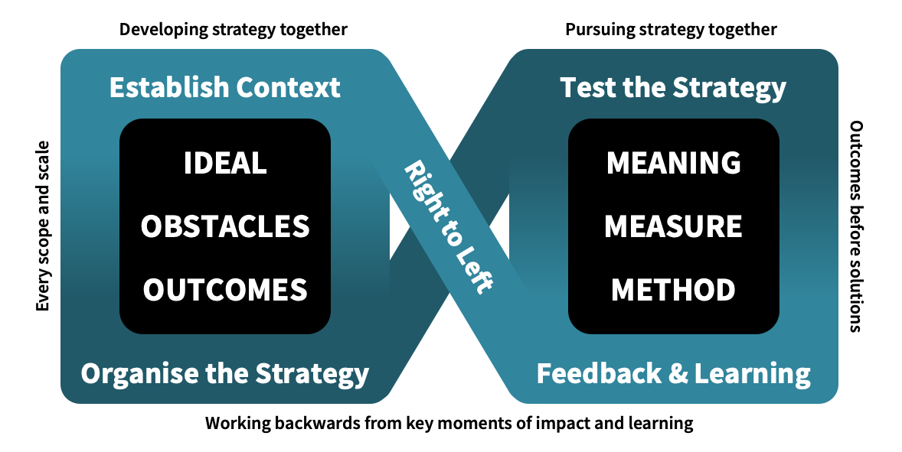

Build teams in 1 minute

Book cover
• Title “Build teams in 1 minute”. • Sub title: “A visual hands-on guide for building teams” • Image of challenge in a shape of a lightning. One person on the left, group of people on the right. • Simple drawing: an airplane. Top down view. • Text at the bottom: Oren Golan.
Learning Outcomes page
• Module 1 - be able to categorize a challenge using Cynefin Framework. • Module 2 - be able to document, build, and operate a strategy.
Core concepts page
- Visual of IdOO.
- Visual of Agendashift Model (outcome-oriented and wholehearted engagement model).
- Visual of Cynefin Framework.
Chapter 1: Identify complex and complicated challenges.

Chapter 2: Build teams that fit each challenge.

Back of book
Same as Core concepts page